12월 아이들 손끝에서 빛나는 크리스마스, 나만의 가랜드 만들기 ✨
안녕하세요, 생각공작소입니다. :)
겨울이 성큼 다가온 12월,
거리마다 크리스마스 트리와 반짝이는 조명들이
아이들의 마음을 설레게 하는 계절이 왔습니다. 🎄✨
이번 달, 생각공작소 아이들은 겨울밤을 환하게 밝힐
나만의 크리스마스 가랜드를 만들었습니다!
선생님과 함께 겨울 이야기를 나누고,
직접 그리고 꾸민 장식들을 나뭇가지에 달아
세상에 하나뿐인 가랜드를 완성했답니다. 🌟
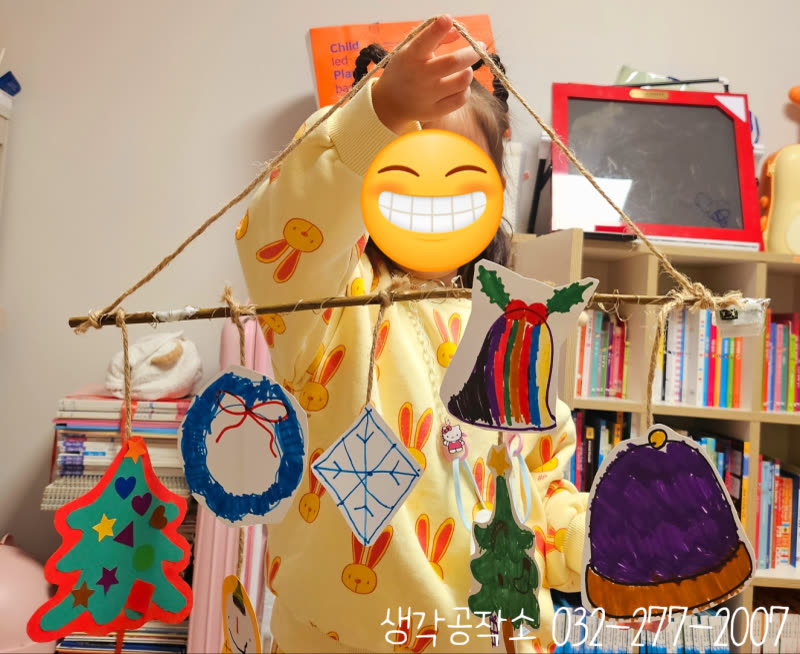
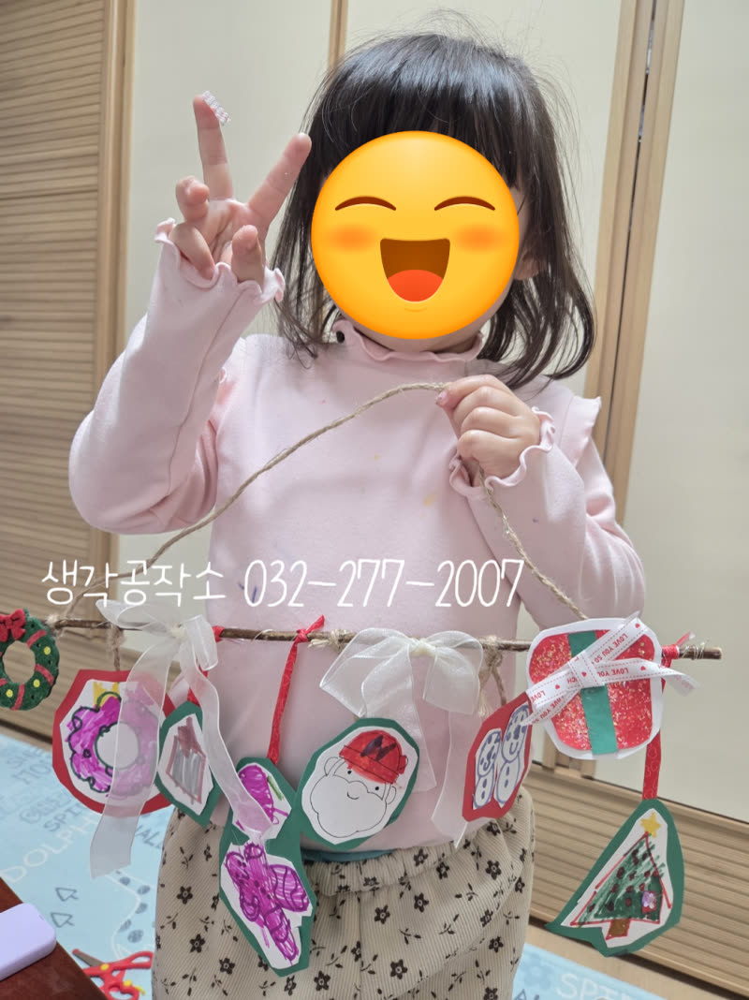
먼저 선생님과 함께
겨울과 크리스마스에 관한 이야기를 나누었어요.
"크리스마스 하면 뭐가 떠오르니?"
"산타 할아버지요!"
"눈사람이요!"
"선물 상자도요!"
아이들의 상상력이 쏟아져 나왔습니다.
그렇게 마음속에 그린 겨울 풍경을
도화지 위에 하나씩 그려내기 시작했어요. 🎅⛄🎁
빨간 코를 가진 루돌프, 따뜻한 목도리를 두른 눈사람,
알록달록 예쁜 크리스마스트리, 반짝이는 별과 눈송이까지.
아이들의 손끝에서 겨울이 태어났습니다.
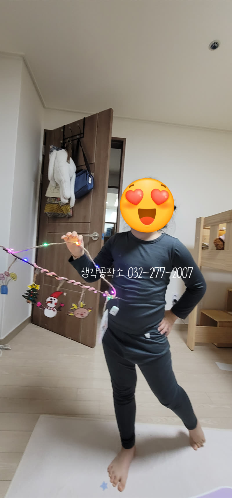
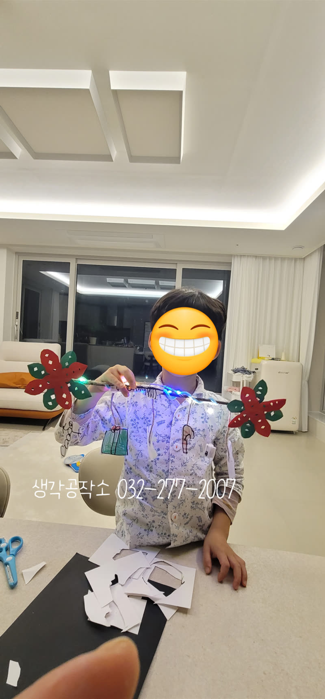
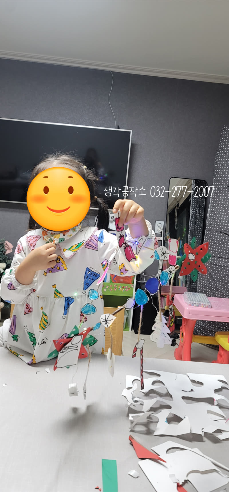
선생님들은 나뭇가지에 전구를 감아주고,
아이들이 그린 그림들을 가위로 오려
하나씩 가랜드에 매달았습니다. 😊
"여기에 제가 그린 산타 달아주세요!"
"이 눈사람은 여기요!"
자신이 그린 그림들이 가랜드가 되어가는 모습을 보며
아이들의 눈빛이 점점 반짝였어요. ✨
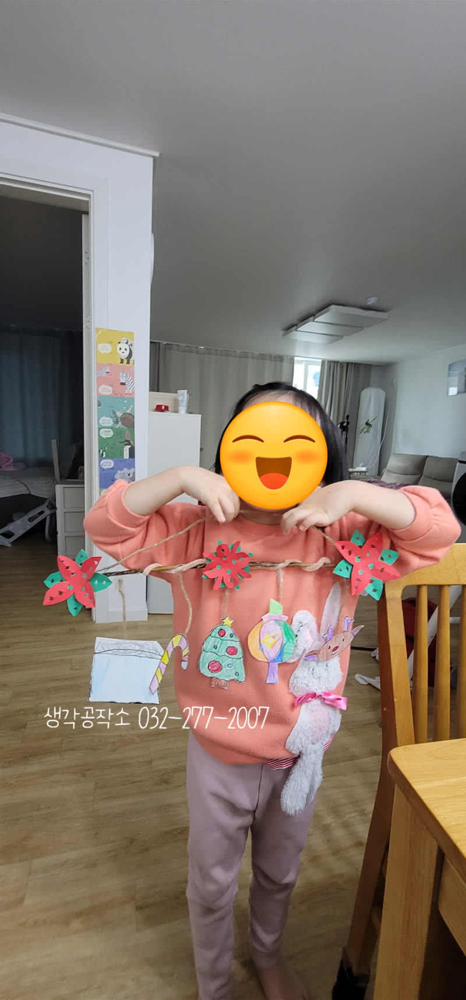
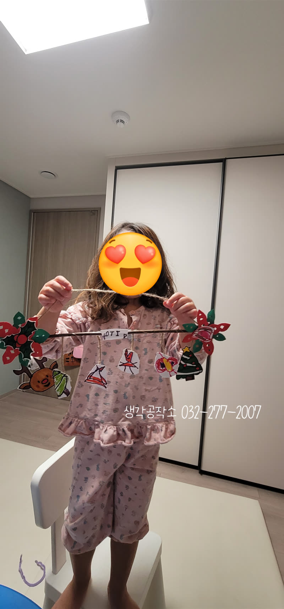
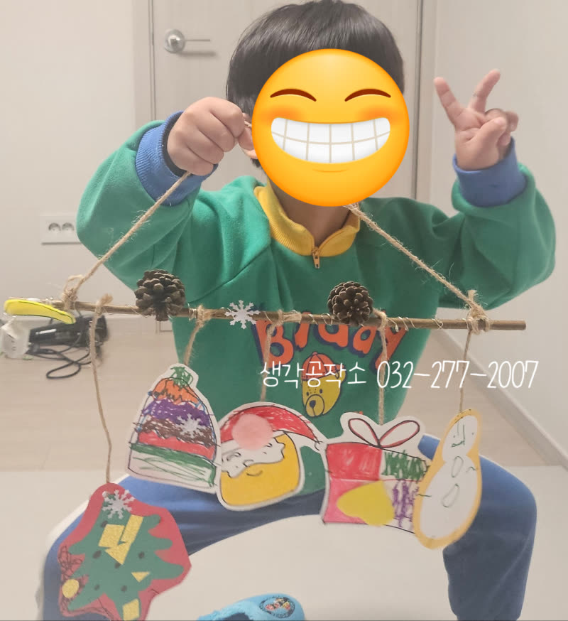
그리고 드디어, 완성!
나뭇가지에 주렁주렁 매달린
눈사람, 산타, 트리, 선물 상자, 별, 눈송이들.
저마다 다른 색깔과 모양으로 가득한 가랜드가 완성되었습니다.
"선생님, 제가 만든 거예요!"
멋지죠?"
아이들은 자신의 작품을 자랑스럽게 들어 올리며
환하게 웃었습니다. 😊
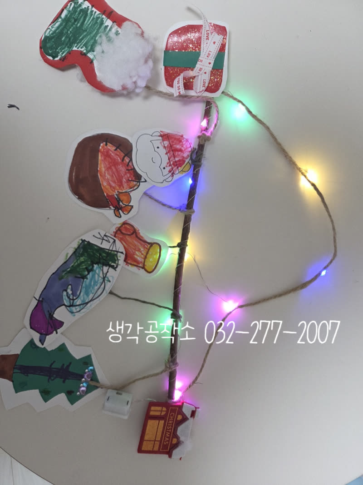
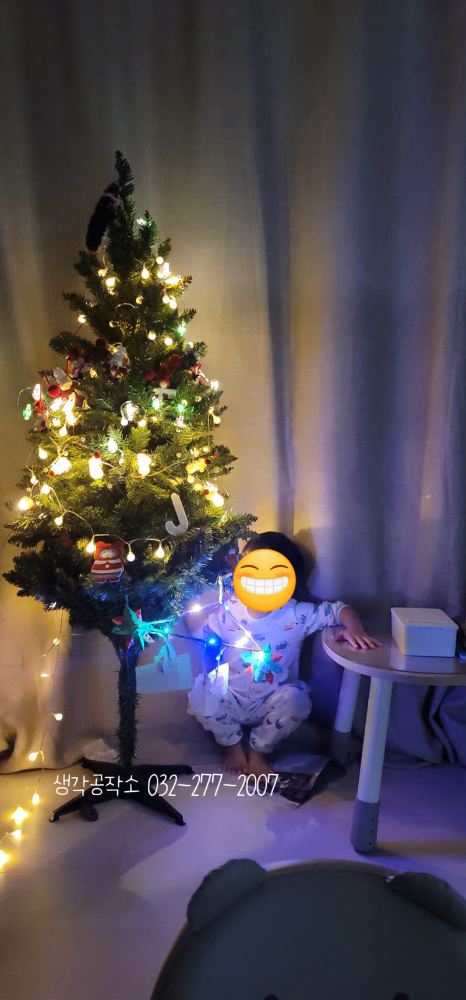
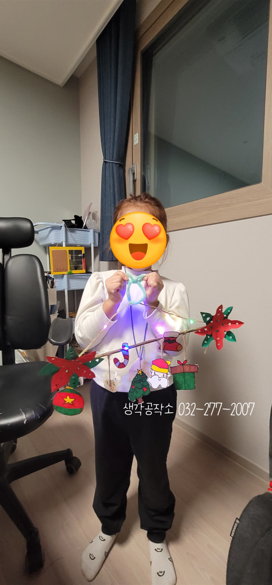
그런데 진짜 마법은 이제부터였습니다.
불을 끄고 가랜드의 전구를 켜자,
방 안이 알록달록한 빛으로 가득 찼어요. 💡
"와아!" "진짜 예뻐요!"
아이들의 탄성이 터져 나왔습니다.
자신이 만든 가랜드가 빛을 받아 반짝이는 모습을 보며
아이들은 작은 크리스마스를 선물받은 것처럼 행복해했답니다. 🎄
어둠 속에서 빛나는 가랜드를 들고
연신 웃음 짓는 아이들의 모습은
올해 12월의 가장 따뜻한 풍경이었습니다.
이번 가랜드 만들기 활동은 단순히 예쁜 장식을 만드는 것을 넘어,
아이들이 스스로 상상하고 표현하며 완성하는 과정이었습니다.
겨울을 떠올리고, 그림으로 그려내고, 오리고 붙이며 손끝의 감각을 키우고,
완성된 작품을 보며 성취감을 느끼는 모든 순간이 아이들의 오감과 창의력을 자극했답니다.
생각공작소는 아이들이 계절을 온몸으로 느끼고
자신만의 방식으로 표현할 수 있도록 언제나 함께하겠습니다. 🙌
저희 생각공작소는 모든 활동을
아이들의 가정에서 제공인력 선생님과 1:1로 진행하며,
아이들의 오감을 자극하고 창의력과 집중력을
자연스럽게 키우는 맞춤형 프로그램입니다.
단순히 만들기를 가르치는 것을 넘어,
아이들이 스스로 탐색하고 표현하며
성장할 수 있도록 세심하게 이끌어갑니다.
오감 쑥쑥! 생각 쑥쑥!
📞 생각공작소 032-277-2007